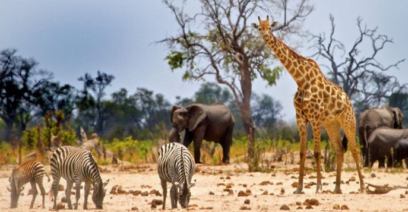

Есть много людей, которые любят путешествовать по миру и иметь возможность наслаждаться ощущением
свободы,
которое возникает каждый раз, когда вы открываете для себя новые места. Путешествовать по миру
означает
расширять свой кругозор, свои знания и, прежде всего, учиться у мира и у людей. Если есть
что-то, что вам
все посоветуют, так это больше путешествовать.
Путешествие мечты начинается с выбора страны для
отдыха. Каждый
уголок
мира интересен и неповторим, отличается своим особенным колоритом и самобытностью. Чтобы удачно
спланировать
поездку, даже опытному туристу сначала нужно определиться с направлением.
Еще не решили, какая страна вас привлекает больше? Представляем 20 неожиданных стран, которым
есть, чем
удивить
путешественников.
ЮАР
Cтрана, где экзотический отдых сочетается с качественной жизнью. Именно здесь можно отдыхать на
лучших
курортах и наблюдать хищных зверей на сафари. Отправиться в поход, рыбачить или дегустировать
необычные
блюда африканской кухни. Любоваться захватывающими горными пейзажами или заниматься
экстремальным
туризмом и спортом.
ЮАР называют одной из самых красивых стран мира -
от
исторического Кейптауна на Юге до нетронутой дикой природы Парка Крюгера на Севере. На
Западном Побережье вас ожидает экзотическая кухня
из морепродуктов и песчаные пляжи. А на восточном берегу откроете для себя путешествие по Дороге
Садов с
невиданными по красоте ландшафтами.
Южно-Африканская Республика — одна из богатейших стран Африканского континента, страна
контрастов,сочетающая первобытность и современность.
Государство, расположенное в южной части Африки. В последнее время туры в ЮАР приобретают
популярность.
Эта страна поражает туристов великолепием дикой природы, экзотическими животными и необычной
культурой
коренных жителей. Стоимость туров в ЮАР постоянно повышается, потому что их популярность
увеличивается.
ЮАР — это единственная страна, где фактически сосуществуют три столицы: это Тшване (до 2005
года
Претория) — административная столица, Кейптаун (законодательная столица), Блумфонтейн
(судебно-правовая). К крупным городам можно отнести Йоханнесбург. Население ЮАР достаточно
разнообразно этнически: 79 процентов составляют черные, 10 процентов — белые, 11 процентов — это
мулаты, индийцы, азиаты. Жители ЮАР говорят на разных языках и имеют разный социальный статус.
Согласно Конституции 1996 года, в ЮАР 11 официальных языков. Это английский, африкаанс, венда,
зулу,
коса, ндебеле, свази, сесосто, тсвана, тсонга, северный сото. Самым распространенным считается
за ним идут коса, африкаанс и английский.
Южная Африка является одним из самых популярных мест охоты на диких животных. Здесь разрешена
охота на таких животных, как слон, белый носорог, лев, бизон и леопард. Сафари — самое
популярное
занятие среди многих туристов.
Что посмотреть в ЮАР в первую очередь:
Йоханнесбург
Музей апартеида
Кейптаун
Набережная Виктории и Альфреда
Ботанический сад Кирстенбош
Пустыня Калахари
Национальный парк Крюгер
Морской национальный парк Тситсикамма
Национальный парк Пиланесберг
Драконовы Горы
Столовая гора
Скала Лайонс-Хед
Кимберлитовая трубка «Большая дыра»
Каньон реки Блайд
Колыбель Человечества
Дорога Садов (Гарден-Рут)
Мыс Доброй Надежды
Пещеры Канго
Винные фермы Франшхук
Остров Роббен
Город-курорт Сан-Сити
Водопад Ауграбис
Водопад Тугела
Пляж Боулдерс
Пляж Золотая Миля
Посмотрите чудесные виды ЮАР в этом увлекательном видео!
Мьянма
Мьянма — страна монастырей и храмов. Страна практически
изолирована
от всего мира.
Несмотря на это, Мьянма может похвастаться красивейшими городами, похожими на огромные храмы,
замками,
облаченными в
золото, живописными деревнями и дружелюбными людьми.Ее называют страной "золотых пагод", которых
более
2,5 тысячи. Все государство можно назвать огромным археологическим заповедником, в котором
сохранились
следы древнейших
цивилизаций.Перемещаться между городами в стране можно только на самолетах.
Мьянма является одним из мощнейших анклавов буддийской культуры во всей Азии, из-за тысяч
храмов и пагод
на ее территории страну часто называют "Страна Золотых Пагод". Поездка в Мьянму - это
путешествие в
иной мир, и ощущение увлекательного приключения не покинет на протяжении всего пребывания там.
Мьянма считается самым таинственным азиатским направлением, что связано с полной изоляцией
страны в
прошлом. Река Иравади, пересекающая страну с севера на юг, одновременно является самой главной
географической особенностью страны - она впадает в Андаманское море, разделяется на множество
рукавов, образуя огромную дельту. Долины рек Иравади и Ситаун – единственные равнинные районы
Мьянмы. В Мьянме мужчины и женщины ходят в юбках (саронгах) с небольшой разницей: у мужчин юбка
завязывается на пышный узел спереди, а у женщин – аккуратно сбоку. При игре в местную
разновидность
футбола юбка завязывается на нужную высоту и получается лоунжи – удобная спортивная одежда.
Женщины
наносят на лицо пасту из толченной древесины дерева танака, которую разводят в воде, считается,
что
данный состав очень полезен для кожи и защищает от солнечных лучей, поэтому детей мажут с ног до
головы, а цвет кожи меняется на бледно-желтый.
Что посмотреть в Мьянме в первую очередь:
Город Янгон
Храмы в Багане (Паган)
Пагода Шведагон
Храм Татбинью (Thatbyinnyu Temple)
Пагода Чайттийо (Золотой Камень)
Пагода Чаутаджи (Лежачий Будда)
Пагода Суле
Королевский дворец Мандалая
Ступа Мингун-Пайя
Древний город Мраук-У (Mrauk U)
Буддийский храм Дамаянджи
Монастырь Таунг Калат (Гора Попа)
Мингунский колокол
Пещеры Пиндайя
Река Иравади
Деревянный мост Убэйн
Озеро Инле
Пляж Нгапали
Татуированные женщины племени Чин
Водный фестиваль Тинджан (Thingyan Water Festival)
Исторические и религиозные достопримечательности Мьянмы – та основа, которая составит будущее
туризма в
этой стране. Экскурсии в Мьянму пока находятся в стадии развития, а потому за впечатлениями
ехать
сюда
следует как можно скорее, пока эти земли ещё хранят свою первозданность. Тем, в ком живёт дух
приключений, лучшего места для путешествий просто не найти.
Почувствуйте атмосферу Мьянмы в этом красивом видео!
Зимбабве
Зимбабве — это не та страна, где главными достопримечательностями являются исторические
рукотворные
памятки. Это одна из беднейших, но в то же самое время и одна из красивейших стран в мире.
Само название «Зимбабве» означает «каменные дома» в переводе с одного из многочисленных местных
языков. С IX по XVII век современная территория Зимбабве входила в состав империи Мономотапа,
занимавшей всю южную Африку.
Столица империи находилась как раз здесь и называлась Большой Зимбабве. После прибытия
европейцев,
эти земли были в колониальном владении португальцев и англичан, а в 1980-м году страна обрела
независимость.

Зимбабве известно на весь мир водопадом Виктория. Он расположен на границе с Замбией на реке
Замбези. Это одно из самых красивых мест на планете. Широкий поток воды (около 1800 м) падает с
высоты 120 м, поднимая вверх капли воды, напоминающие густой туман, который виден за 30 км.
Бассейн
реки Замбези - самое популярное туристическое направление в стране. Здесь находятся
водохранилище
Кариба, известное своими возможностями для рыбалки, множество природоохранных зон, где
устраиваются
сафари, а также большое количество резерватов для охоты. Любители пешего туризма по достоинству
оценят Восточное нагорье с самой высокой вершиной Зимбабве - горой Иньянгани (2592 м), а
любознательным туристам обязательно будет интересно посетить руины городов древней цивилизации
Мономотапа, которые находятся в центральной части страны.